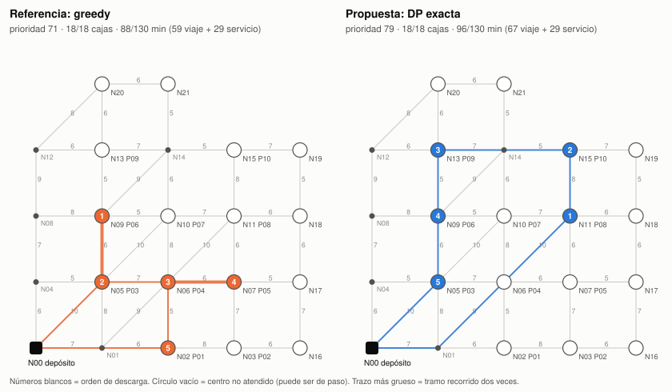
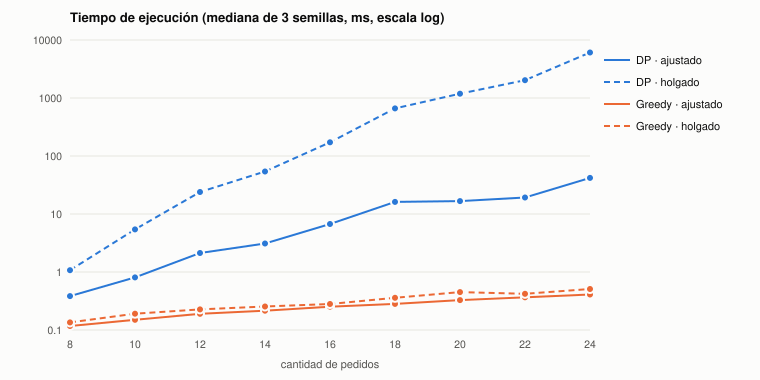

Universidad Católica del Uruguay · Algoritmos Avanzados de Búsqueda y Optimización (305580) · 2026-2S · Grupo IA2A
Trabajo final grupal · Comparación de una programación dinámica exacta (Held–Karp con poda) con un greedy de inserción
| Integrante | Aportes principales |
|---|---|
| [Nombre Apellido 1] | [completar] |
| [Nombre Apellido 2] | [completar] |
| [Nombre Apellido 3] | [completar] |
| [Nombre Apellido 4] | [completar] |
Docente: Diego Gabriel Fernández Raiz · Entrega: 30 de noviembre de 2026
DECLARACION_IA.md. El grupo debe revisar, verificar y reescribir lo que corresponda antes de entregar.
Una red ficticia de bibliotecas comunitarias tiene un vehículo en un depósito y pedidos de libros. Cada pedido tiene un centro de entrega, una cantidad de cajas, una prioridad y minutos de descarga. Hay que decidir qué pedidos atender, en qué orden y por qué tramos viajar, saliendo y volviendo al depósito.
Es un problema de orientación con capacidad: combina una mochila 0/1 (qué pedidos caben, tema 4) con un problema de recorrido tipo viajante (en qué orden, tema 4, Held–Karp) sobre una red donde los tiempos entre centros salen de caminos mínimos (tema 2, Dijkstra). No se puede resolver la selección y el recorrido por separado: el tiempo que cuesta un pedido depende de qué otros pedidos se visitan cerca.
Representación. Lista de adyacencia de un grafo no dirigido (cada fila de conexiones.csv se agrega
en ambos sentidos). Un plan se representa como en el LEEME.md: escenario_id, lista de
pedidos_atendidos y recorrido (lista ordenada de nodos de depósito a depósito).
Se partió del paquete Datos_Sinteticos_Trabajo_Final_ALGABO.zip (16 nodos, 29 conexiones, 10 pedidos,
3 escenarios; todos los datos son sintéticos, sin correspondencia con lugares ni personas reales; uso
académico). Se copió sin modificar a datos/originales/. El módulo datos.py valida: ids únicos,
tipos válidos y un único depósito; extremos de conexiones existentes, tiempos enteros positivos, sin lazos ni
conexiones duplicadas; cada pedido en un nodo existente de tipo centro, un pedido por centro, cajas/prioridad/servicio
positivos; escenarios con depósito válido y referencias existentes; y, al construir cada instancia, que todo centro
con pedido sea alcanzable desde el depósito. Resultado: 0 problemas en los datos originales y en los adaptados.
No hay valores faltantes. Las coordenadas x,y solo se usan para dibujar; los tiempos válidos son los de
conexiones.csv.
Para estudiarla, src/preparar_datos.py genera datos/adaptados/ a partir del original (reproducible,
sin tocar el original):
escenarios.csv: pedidos_incluidos (P01-P10 o P01-P16) y
conexiones_cerradas. Así los escenarios originales siguen idénticos y se puede cambiar una condición por vez.E_CIERRE (E_TIEMPO con la conexión C25 N00–N05 cerrada: es una de las
tres salidas del depósito y la usan los planes de ambos métodos en E_TIEMPO); E_AMPLIADO (16 pedidos,
24 cajas, 160 min); E_AMPLIADO_BASE (16 pedidos con los límites de E_BASE, para aislar el efecto de tener
más opciones).Además se hicieron dos experimentos auxiliares: (i) análisis de cierres, que cierra cada una de las 29 conexiones originales de a una en E_TIEMPO, para no depender de un único cierre elegido a mano; (ii) escalabilidad, con instancias aleatorias en una grilla de 5×5 (tiempos 5–10 min) con 8 a 24 pedidos, semillas 1, 2 y 3, en dos familias: ajustada (18 cajas, 130 min, como E_BASE) y holgada (30 cajas, 200 min).
Limitaciones de los datos: son sintéticos e inventados (también la adaptación), con tiempos fijos, sin tráfico ni ventanas horarias. Las conclusiones son sobre el comportamiento de los algoritmos en instancias de este tipo y tamaño, no sobre una red real. Las prioridades son puntajes arbitrarios.
Parte común (grafo.py). Ambos métodos usan Dijkstra (heap con heapq y entradas obsoletas;
desempate por id de nodo) desde el depósito y desde cada centro con pedido. Así se obtienen el tiempo mínimo entre
cada par de “paradas” y el camino nodo por nodo, que luego se usa para escribir el recorrido completo. Esta reducción es
correcta porque entre dos descargas consecutivas ningún recorrido válido (aunque repita nodos) tarda menos que el
camino mínimo.
referencia_greedy.py)Empieza con el plan vacío (depósito → depósito). En cada paso calcula, para cada pedido no elegido que entra en la capacidad, su mejor posición dentro del orden actual (inserción más barata) y los minutos extra que agrega (desvío de viaje + servicio). Elige el pedido con mayor rentabilidad = prioridad / minutos extra que no haga pasar el límite (desempate: menor extra, luego menor id). Se detiene cuando ningún pedido entra. Relación con el curso: decisión voraz con una función de evaluación local, como Greedy Best-First (tema 3). Garantía: el plan siempre es factible. Límites: no garantiza el óptimo y no deshace decisiones; la rentabilidad mira el tiempo pero no las cajas. Costo ≈ n³ operaciones.
propuesta_dp.py)Es el Held–Karp de la ADI 1, extendido a elegir subconjuntos. Cada celda de la tabla guarda: “el mínimo de minutos de viaje para salir del depósito, atender exactamente los pedidos del conjunto S y quedar parado en el pedido j”, junto con el pedido anterior a j (para reconstruir el orden). El conjunto S se guarda como un número binario (bit i = 1 si el pedido i está). Desde la celda (S, j) se pasa a (S + k, k) sumando el tiempo mínimo de j a k. La tabla se llena por capas (conjuntos de 1 pedido, de 2, …).
Poda (idea de ramificación y poda, tema 5): no se crea la celda (S + k, k) si las cajas superan la capacidad, o si viaje hasta k + servicio de S + k + volver directo desde k supera el límite. “Volver directo” es una cota optimista válida, porque cualquier continuación tarda al menos eso; por lo tanto la poda nunca descarta un plan factible. Al final, para cada conjunto alcanzado se suma la vuelta al depósito y se elige el de mayor prioridad y, ante empate, menor tiempo total.
Garantía: el plan es óptimo (revisa todos los órdenes de todos los subconjuntos no podados). Límite: la tabla crece como 2ⁿ·n en el peor caso; con límites holgados la poda ayuda poco.
| Decisión | Referencia (greedy) | Propuesta (DP Held–Karp + poda) |
|---|---|---|
| Selección | Un pedido por vez, por prioridad/minutos extra; nunca se arrepiente | Todos los subconjuntos que caben; elige el mejor |
| Orden y recorrido | Inserción más barata en el orden actual + caminos de Dijkstra | Mejor orden de cada subconjunto (DP) + caminos de Dijkstra |
| Garantía / límite | Factible; sin garantía de óptimo; muy rápido | Óptimo; costo exponencial en el peor caso |
Verificador independiente (verificador.py). Recibe el plan crudo y recalcula todo desde
conexiones.csv, sin usar Dijkstra ni la matriz de distancias: inicio y fin en el depósito, cada paso por una
conexión existente y abierta, pedidos distintos y del escenario, centro de cada pedido presente en el recorrido,
cajas ≤ capacidad y total ≤ límite. Todos los planes informados pasan por él.
Caso chico a mano (red de la guía del taller: N00 –10– N05 –6– N09, capacidad 5; P03: 2 cajas, 8 puntos, 4 min; P06: 3 cajas, 13 puntos, 5 min):
| Selección | Viaje | Servicio | Total | Prioridad |
|---|---|---|---|---|
| Solo P03 (N00-N05-N00) | 20 | 4 | 24 | 8 |
| Solo P06 (N00-N05-N09-N05-N00, pasa por N05 sin descargar) | 32 | 5 | 37 | 13 |
| P03 y P06 (mismo recorrido, descarga en N05) | 32 | 9 | 41 | 21 |
Con límite 40 lo mejor es solo P06 (13 puntos); con 41, ambos (21 puntos, justo en el límite: la igualdad está
permitida). Ambos métodos devuelven exactamente esto (pruebas.py).
Fuerza bruta. En los cuatro escenarios de 10 pedidos se probó por separado, con una búsqueda recursiva que enumera todas las secuencias factibles, cuál es el óptimo. La DP coincide en prioridad y tiempo total en los cuatro; el greedy nunca lo supera. Planes inválidos: el verificador rechaza seis planes armados a propósito (21 cajas con capacidad 18; salto N00→N09 sin conexión; sin regreso; pedido cuyo centro no se visita; uso de la conexión cerrada C25 en E_CIERRE; 96 min con límite 95).
Ejemplo recalculado a mano (propuesta en E_BASE): recorrido N00-N01-N06-N11-N15-N14-N13-N09-N05-N00 = 7+9+10+8+5+7+5+6+10 = 67 min de viaje; servicio P08 6 + P10 10 + P09 4 + P06 5 + P03 4 = 29; total 96 ≤ 130; cajas 4+7+2+3+2 = 18 ≤ 18; prioridad 18+30+10+13+8 = 79. Pasa por N09 y N05 una vez cada uno y los atiende; pasa por N14 (cruce) solo de tránsito.
Condiciones comparables: en cada escenario ambos métodos reciben los mismos datos, restricciones y criterio
(primero factibilidad, luego prioridad, luego tiempo total). Ninguno usa azar, así que no hay variabilidad entre
ejecuciones del plan; las semillas solo se usan para generar las instancias de escalabilidad. Tiempo de
ejecución: time.perf_counter() en milisegundos, incluyendo Dijkstra + método, mediana de 5 repeticiones
(una sola en escalabilidad); Python 3.15.2 (CPython), macOS 27.3, Apple M5 Pro. Ese tiempo del programa no tiene
nada que ver con los minutos del plan.
| Escenario | Método | Fact. | Pedidos (orden de descarga) | Prior. | Cajas | Viaje | Serv. | Total | ms |
|---|---|---|---|---|---|---|---|---|---|
| E_BASE 18 cajas · 130 min | Referencia | sí | P06 P03 P04 P05 P01 | 71 | 18 | 59 | 29 | 88 | 0,16 |
| Propuesta | sí | P08 P10 P09 P06 P03 | 79 | 18 | 67 | 29 | 96 | 2,0 | |
| E_CAPACIDAD 12 · 130 | Referencia | sí | P03 P04 P05 | 47 | 12 | 45 | 19 | 64 | 0,13 |
| Propuesta | sí | P10 P09 P06 | 53 | 12 | 63 | 19 | 82 | 0,56 | |
| E_TIEMPO 18 · 95 | Referencia | sí | P06 P03 P04 P05 P01 | 71 | 18 | 59 | 29 | 88 | 0,14 |
| Propuesta | sí | P09 P10 P08 P07 | 78 | 18 | 68 | 27 | 95 | 1,4 | |
| E_CIERRE* 18 · 95 · sin C25 | Referencia | sí | P01 P04 P05 P02 | 69 | 18 | 52 | 28 | 80 | 0,14 |
| Propuesta | sí | P06 P10 P08 P04 | 76 | 18 | 65 | 27 | 92 | 1,2 | |
| E_AMPLIADO* 24 · 160 · 16 ped. | Referencia | sí | P03 P04 P08 P05 P02 P01 | 95 | 24 | 61 | 38 | 99 | 0,26 |
| Propuesta | sí | P08 P14 P10 P15 P09 P06 | 107 | 24 | 87 | 38 | 125 | 110 | |
| E_AMPLIADO_BASE* 18 · 130 · 16 ped. | Referencia | sí | P06 P03 P04 P05 P01 | 71 | 18 | 59 | 29 | 88 | 0,23 |
| Propuesta | sí | P09 P15 P10 P13 P08 | 81 | 18 | 87 | 29 | 116 | 23 |
* Escenarios de la adaptación. Minutos del plan: viaje, servicio y total. “ms” = mediana del tiempo de ejecución del programa.
Los recorridos completos nodo por nodo (con nodos de paso y regreso) están en resultados/resultados.csv y
resultados/planes.json. Todos los planes son factibles según el verificador independiente.

Datos originales (E_BASE, E_CAPACIDAD, E_TIEMPO). La propuesta gana por 6 a 8 puntos (9–11 %). La causa es visible en la tabla: en los tres escenarios la restricción que limita es la capacidad (los dos métodos terminan con las cajas llenas), y al greedy le sobran entre 7 y 66 minutos. La rentabilidad del greedy mide prioridad por minuto, pero el recurso escaso son las cajas: gasta cajas en pedidos cercanos de poca prioridad (P03, P06, P01) y cuando llega a P10 ya no tiene lugar. La DP evalúa conjuntos completos y no tiene ese sesgo. En E_TIEMPO la propuesta usa exactamente los 95 minutos.
Cierre de un tramo. En E_CIERRE la propuesta baja de 78 a 76 puntos; la referencia, de 71 a 69. En el
análisis de los 29 cierres posibles en E_TIEMPO (resultados/cierres.csv), el óptimo nunca baja más de
2 puntos (78 → 76): la red tiene caminos alternativos parecidos. El greedy es más sensible e irregular: con C18
(N05–N09) cerrada cae de 71 a 58 (−13), con C02 a 65 y con C15 a 66: son tramos que usaba su plan, y al
quitarlos el greedy no encuentra una alternativa equivalente. Un cambio chico en las distancias cambia su primera elección y arrastra el resto. Responde la parte
(a) de la pregunta: el exacto es más robusto ante cierres.
Red ampliada. Con los mismos límites de E_BASE pero 16 pedidos (E_AMPLIADO_BASE), la propuesta mejora de 79 a 81 puntos usando P15 y P13 del barrio nuevo, mientras que el greedy repite exactamente el plan de E_BASE (71): sus primeras elecciones son siempre las cercanas, y el barrio lejano nunca le parece rentable. El recorrido de la DP pasa por N21 y N19 sin descargar (P16 y P14 no se eligen): pasar no es atender. Con más recursos (E_AMPLIADO), 107 contra 95. El costo de la DP sube de 2 ms a 23–110 ms (14 612 y 67 444 celdas), todavía despreciable para planificar un reparto.

Escalabilidad (resultados/escalabilidad.csv). Con límites ajustados la poda mantiene la DP
por debajo de 0,1 s incluso con 24 pedidos (mediana 42 ms; entre 33 y 98 ms según la semilla), porque solo caben
4–6 pedidos por plan. Con límites holgados la tabla explota: mediana de 172 ms con 16 pedidos, 1,2 s con 20 y
6,1 s con 24 (entre 3,8 y 15,8 s según la semilla, hasta 6 millones de celdas). Crece aproximadamente ×3 cada dos
pedidos, así que con unos 30 pedidos y límites holgados ya tardaría minutos en Python. Mientras tanto, el greedy queda
en promedio un 22 % (ajustado) y un 23 % (holgado) por debajo del óptimo, con mucha variabilidad (de 0 % a 58 %); alcanzó
el óptimo en solo 3 de 54 instancias. Estos números valen para estas instancias sintéticas; no se generalizan.
Referencias y apoyos. Apuntes y presentaciones de cátedra ALGABO 2026 (temas 2–5); ADI 1 (Held–Karp);
consigna y LEEME.md del dataset; documentación de Python (heapq, csv).
Todo el código es propio de esta versión (generado con IA, ver sección 7); solo se usa la biblioteca estándar.
Herramienta: Claude Opus 5.5 (Anthropic), usada a través de Claude Code (app de escritorio), el 23/11/2026.
Finalidad: a pedido de un integrante, la IA generó una versión completa de respaldo: adaptación de datos,
todo el código (src/*.py), la ejecución de los experimentos, este informe, el README y el guion del video.
El grupo la usará como base para trabajar y reescribir.
Parte afectada: todo el entregable de esta versión. Cada archivo de código tiene la marca
[Generado por IA …] en su encabezado.
Evidencias: exportación de la conversación completa (prompts y respuestas) en evidencias_IA/.
El pedido textual fue: “i want you to do everything, so i have a floor to stand on […] in this version in which
you'll do everything, say it, since it's mandatory to describe the use of ai”.
Intervención y verificación del grupo: [completar: qué se revisó, qué se modificó o
descartó, y cómo se comprobó, por ejemplo: recálculo a mano de E_BASE, ejecución de pruebas.py, revisión
línea por línea de cada función por parte de cada integrante]. Verificaciones automáticas incluidas en esta
versión: pruebas.py (caso chico a mano, fuerza bruta y planes inválidos) y el verificador independiente.